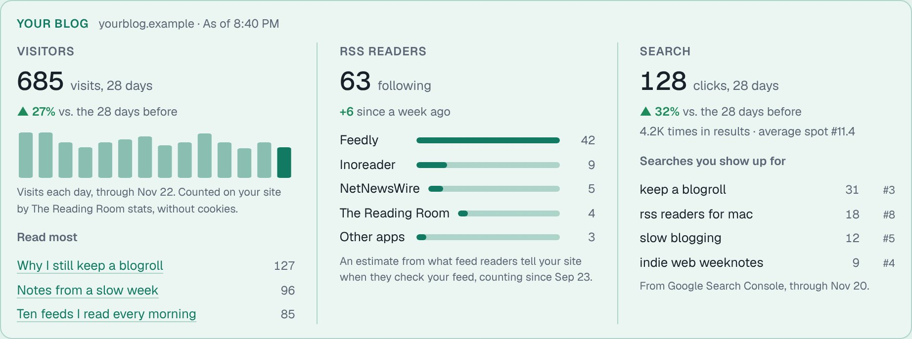

See how your blog is doing.
The Reading Room stats is a free WordPress plugin. With it, Writing in The Reading Room shows your blog’s visitors, the RSS readers that follow you, and your search traffic, next to your calendar. It counts on your own site, without cookies, and never stores your visitors’ IP addresses.

Install it
- In your WordPress dashboard, go to Plugins › Add New Plugin › Upload Plugin, choose the file you downloaded, and press Install Now, then Activate.
- In Users › Profile, make an application password called “The Reading Room”. Copy it.
- In The Reading Room, open Settings › Your site, Mastodon & Bluesky and connect your site with your username and that password. If you already post notes from the app, it’s connected.
- Open Writing. Your blog’s numbers show below your drafts and ideas. Counting starts the day you turn the plugin on, so the comparisons fill in over the following weeks.
What it counts
Visits
A small script at the end of each page tells your site that someone read it. Each visitor counts once a day. It works with page caching, and robots that don’t run scripts aren’t counted. You aren’t counted either, when you’re signed in. The app also shows the posts read most in the last 28 days.
RSS readers
When a feed reader checks your feed, it says which reader it is. Online readers such as Feedly and Inoreader also say how many people follow you there. Apps on someone’s own phone or computer count as one reader each. It’s an estimate, shown by reader app.
Search traffic
If your site uses Site Kit by Google with Search Console connected, the app also shows your clicks from Google, how often you showed up in results, your average spot, and the searches you show up for. Without Site Kit, this part is left out.
Your readers’ privacy
No cookies, and nothing is stored in your visitors’ browsers. To count each visitor once a day, the plugin mixes their IP address and browser name with a secret that changes every day into a one-way code. The address itself is never stored, and the codes are deleted the next day. The numbers stay in your own WordPress database and are never sent to The Reading Room or anyone else; only people who can edit posts on your site can read them. The plugin adds a suggested paragraph for your privacy policy under Settings › Privacy.
Turn any part off in Settings › The Reading Room stats. Deleting the plugin removes everything it kept.
Questions
Does it work without WordPress?
Not yet. The plugin is for WordPress sites, including WordPress.com plans that allow plugins.
Where’s the code?
In the app’s GitHub repository. Problems or ideas? Open an issue.